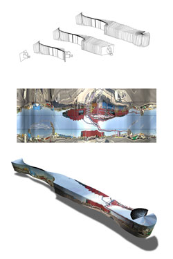

1000 DAYS OF THEORY
Understanding Meta-Media
Lev Manovich
If we want to describe what new media does to old media with a single term, 'mapping' is a good candidate. Software allows us to remap old media
objects into new structures -- turning media into 'meta-media.'[1]
In contrast to media, meta-media acquires three new properties. First, with software, data can be translated into another domain -- time into 2D
space, 2D image into 3D space, sound into 2D image, and so on. (More complex and unusual mappings are also possible -- and the search for new mappings
allows us to access old media objects in new ways congruent with information interfaces we use in our everyday life represents one of the most
fruitful research directions in new media art.) Second, media objects can be manipulated using GUI (Graphical User Interface) techniques such as:
move, transform, zoom, multiple views, filter, summarize.[2] And third, media objects can now be
'processed' using standard techniques of computerized data processing; search, sort, replace, etc.
Let me provide a few examples of meta-media involving new interfaces to cinema. For instance, software developed by Steve Mamber (UCLA) allows a
user to "map" feature films into a matrix of still images, each image representing a single shot. Here time is mapped into space. Another software
tool written by Mamber takes shots from the film and reconstructs their architecture as 3D navigable spaces (thus reversing the normal procedure of
computer animation). Here the mapping goes from 2D to 3D -- from the flat surface of a movie screen into a virtual computer space.
[Invisible Shape of Things Past. Joachim Sauter / ART+COM, 1993-97]
The project Invisible Shape of Things Past by Art+Com (Berlin) maps historical films of Berlin into new spatial structures that are
integrated into a 3D navigable reconstruction of the city.[3] Another groundbreaking mapping project by
Art+Com is an Interactive Generative Stage set whose parameters are interactively controlled by actors during the opera.[4] During the opera performance, the computer reads the body movements and gestures of an actor and uses
this information to control the generation of a virtual set projected on a screen behind the stage. In this case positions of a human body are mapped
on to various parameters of a virtual architecture such as layout, texture, color, and light.
[Generative Stage. Joachim Sauter / ART+COM, 2002]
For the designer of this project, Joachim Sauter, it was important to preserve the constraints of the traditional opera format -- actors
foregrounded by lighting with the set behind them -- while carefully adding new dimensions to it.[5]
Therefore following the conventions of traditional opera the virtual set appears as a backdrop behind the actors -- no longer as a static picture but
rather a dynamic construction that changes throughout the opera.
Note that the mappings in these examples preserve the granularity and syntactical structure of the old media object, while giving us new ways to
navigate it, to experience its structure, to compress and expand our views of the object, and to interactively control it. In the case of Mamber's
project, the film still consists of shots that can be played from beginning to end -- or we can use the new representation of all the shots in a film
as a single interactive 2D image matrix. In the case of Invisible Shape we can similarly play the historical film segment from beginning to end
-- or we can navigate the 3D model of Berlin to see where these films were taken.

[Invisible Shape of Things Past. Joachim Sauter / ART+COM, 1993-97]
This is why I refer to this type of new media as "meta-media." A meta-media object contains both language and meta-language -- both the
original media structure (a film, an architectural space, a sound track) and the software tools that allow the user to generate descriptions of, and
to change, this structure.
If you think that meta-media is a conservative phenomenon which 'betrays' the movement of computer culture towards developing its own unique
cultural techniques -- Artificial Intelligence, Artificial Life, simulation, database navigation, virtual worlds, etc. -- you are wrong. Since the
1970s modern computing has been grounded in Alan Kay's concept (influenced by previous groundbreaking work in human computer interface, most
importantly Sutherland's 1962 Sketchpad software) of computers as "personal expressive media." After he arrived at Xerox PARC, Kay directed the
development of a word processor program, a music composition program, a paint program, and other tools that redefined the computer as a simulation
machine for old media. So while the routine use of computers as media simulators was not possible until the 1980s, the paradigmatic shift was
already defined by 1970. Gradually, other roles of the modern computer -- a machine for computation, real-time control, and network communication --
became less visible than its role as "simulation engine." (Of course, the development of the World Wide Web in the 1990s made the role of network
communication quite visible to the public). The computer's ability to simulate other media (which means simulating their interfaces and "data formats"
such as written text, image, and sound) is not an afterthought -- it is the essence of a modern post-1970's computer.
(It is possible to state this idea even more radically -- by moving the date even earlier, to the 1930s. When Alan Turing defined the computer as
a general-purpose simulation machine that can simulate most other machines that have already been invented, the idea of media simulation was
implicitly introduced. But it was only in the 1950s-1970s that the work of Sutherland, Engelhard, Kay, and others made this idea into a reality by
allowing the computer to systematically simulate the operations of drawing, drafting, painting, photo manipulation, sound generation and editing, and
so on.)
What is crucial is that the computer's simulational role is as revolutionary as its other roles. Most software tools for media creation and
manipulation do not simply simulate old media interfaces -- a book page and a table of contents in Acrobat, a pan and a zoom of a virtual camera in
Maya, time code count and a razor blade in Final Cut Pro -- but also allow for new types of operations on the media content.[6] In other words, these tools carry the potential to transform media into meta-media.
Today it is the meta-media paradigm -- rather than other seemingly original computer techniques or even computer programming itself -- that is at
the center of computer culture. Outside of the professional and scientific domains, consumers think of computers as machines for downloading, storing,
transmitting and editing media. Software such as media players and editors, CD and DVD burners, ports to connect digital still and video cameras or
MP3 players are what consumer computing is about today.
This is not accidental. The logic of meta-media fits well with other key aesthetic paradigms of today -- the remixing of previous cultural forms of
a given media (most visible in music, architecture, design, and fashion), and a second type of remixing -- that of national cultural traditions now
submerged into the medium of globalization. (the terms "postmodernism" and "globalization" can be used as aliases for these two remix paradigms.)
Meta-media then can be thought alongside these two types of remixing as a third type: the remixing of interfaces of various cultural forms and of new
software techniques -- in short, the remix of culture and computers.
Not every remix by itself is great -- it all depends on who is doing the mix. If we look at interfaces of popular commercial software for media
access and manipulation from this perspective, they begin to look like the work of a strange DJ who mixes operations from old interfaces of various
media with new operations of GUI in somewhat erratic and unpredictable ways. My favorite example of such a remix -- and my least favorite of all
popular commercial software -- is the interface of Adobe Acrobat Reader. It combines (1) the interface from time media software (VCR style arrow
buttons); (2) the interface from image manipulation software (a zoom tool); (3) the interface elements which have strong association with print
tradition -- although they never existed in print (page icons also controlling the zoom factor); (4) the interfaces which have existed in books (the
bookmarks window); (5) the standard elements of GUI such as search, filter, multiple windows).
[Generative Stage. Joachim Sauter / ART+COM, 2002]
But in other cases media/software remixes can provide us with fundamentally new and stylistically /metaphorically coherent paradigms for
representing the visible world, our knowledge, human history, and fellow human beings. The already mentioned projects The Invisible Shape of Things
Past and Interactive Generative Stage are among my favorite examples of successful meta-media. However, artists and designers do not have
exclusive license to create interesting meta-media. For instance, one of the most culturally important examples of meta-media which everybody is
familiar with today is hypertext. Developed by Ted Nelson in the middle of the 1960s, hypertext gives us a new paradigm for organizing information and
knowledge. Since Tim Berners-Lee's World Wide Web popularized hypertext in the 1990s, hypertext has become as central to contemporary culture as
other older media techniques on which we have been dependent for many centuries -- for example, the one-point linear perspective used for image
organization or the codex system used for text organization.
Inventing meta-media is not simple. It requires an in-depth understanding of not only computer science but also the history and conventions of
various media and cultural forms. The payoff, however, is enormous. Until digital computers, each introduction of new media, from Guttenberg to SONY,
required manufacturing and adaptation of new hardware: printing presses, film cameras and projectors, video recorders, lenses, and so on. But
meta-media requires only new software, and therefore it can be developed by a single person or a small group and easily disseminated. Never before has
inventing new media been so easy -- at least from a technical point of view.
Notes
---------------
[1] I introduced the term 'meta-media' in my Avant-garde as Software (1999) available from www.manovich.net/texts_04.htm
[2] In my book The Language of New Media, (The MIT Press, 2001) I discuss in more detail how the
operations specific to particular media are transformed to become general-purpose media interfaces.
[3] See www.artcom.de
[4] The full name of the project is Interactive generative stage and dynamic costume for
André Werners 'Marlowe, the Jew of Malta.' See www.artcom.de for more information and project visuals.
[5] Joachim Sauter, personal communication, Berlin, July 2002.
[6] Remapping media data into a new domain is one of the most important among these operations.
--------------------
Lev Manovich is a Professor in the Visual Art Department, University of California, San Diego. www.manovich.net